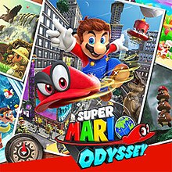

Super Mario Odyssey
This article must comply with the non-Pokémon glitches guideline.
| Super Mario Odyssey | |
|  | |
| Wikipedia link | Super Mario Odyssey |
| Developer(s) | Nintendo |
| Publisher(s) | Nintendo |
| Platform(s) | Nintendo Switch |
| Release date(s) | October 27, 2017 |
Super Mario Odyssey is a 3D platforming game on the Nintendo Switch. This game features Mario and Cappy, a sentient hat giving Mario the ability to take control of (capture) various enemies, creatures, and objects. They travel through many kingdoms in their airship, The Odyssey, to collect Power Moons, and stop Peach and Bowser's wedding.
It has several glitches, some of which are described below.
Contents
Clips
There are several ways to clip through walls or floors. Some of the most notable are the following:
Roll Cancel Clips
When performing a roll cancel (inputting a cap throw and a jump at the same time while rolling) against certain walls on a sloped surface, it is possible for Mario to clip though the wall. This is used in several places in speedruns. It is most often and most consistently performed by roll cancelling immediately out of a ground pound roll.
In version 1.2 of the game, RCCs are more precise, and some are patched.
Notable examples include:
- Sphynx clip: In the Sand kingdom, it is possible to RCC on the Sphynx's head, which can be used to collect a moon that would normally require talking to the sphynx. This is not possible on version 1.2 of the game.
- Inverted Pyramid Clip: In the Sand kingdom, it is possible to RCC through the door of the inverted pyramid. This can be used to skip collecting certain story moons that would normally be required to open the door.
- Snow Clip: In the Snow kingdom, there are 2 places that can be used to perform RCCs, which can be used to clip into the Bound Bowl arena early, skipping several story moons otherwise required to unlock it. If the player goes back to the room containing Rango after doing this clip and collecting the bound bowl multimoon, the boss will not be there and the moon that would be obtained by beating him can be picked up.
| |
Moon Clipping
When collecting a moon that just as spawned in (such as by breaking a nut or rock, opening a chest, etc), it is possible to clip through an adjacent wall. To do so, Mario must backflip and cap throw with the correct timing. This causes Mario to warp upwards a little and clip through the wall. It can also be used without clipping to still get the height.
Moon clipping was discovered by RobinCirex.
Notable examples:
- Nut clip: In the Wooded kingdom, moon clipping is possible using the various nuts the contain moons. One of these is used in speedruns.
- Chest clip: In the cascade kingdom, it is possible to use the moon spawned from the treasure chest to clip through the ceiling, and reach the odyssey faster than going around normally.
- Snow moon slip: In the Snow kingdom, it is possible to moon clip using a ground pound moon in the town. This is another method to clip into the bound bowl arena as an alternative to the RCC.
Surface Clips
Surface clips are a technique found by Mnyush, which are performed in a similar manner to Roll Cancel Clips, but on the surface of water instead of on a slope.
| |
Cheep Cheep Clip
In the seaside kingdom, it is possible to use a Cheep Cheep to clip out of bounds. It was discovered by Syrkl.
To do so, swim with the cheep cheep into a certain part of the edge of the kingdom, uncapture it, swim back a bit, then throw cappy to recapture the fish, and immediately press B and Y together to boost, and move downwards. This will cause the Cheep Cheep to clip through the floor.
The cause of this glitch is that the barrier around the edge of the kingdom is actually a force that pushes Mario backwards, including when he is in a capture. However, it does not push back any uncaptured enemies. By capturing the fish while it is in this barrier, it is possible to boost far enough into it that the collision of the floor ends.
| |
Metro Outfit Skip
In the Metro kingdom, it is possible to clip into the outfit room without using the outfit normally required. This is done by performing a ground pound roll on the barrel next to the wall of the building above the room.
Infinite Height Glitches
There are several ways to gain an unlimited amount of height in certain areas of the game (barring some invisible ceilings).
| |
Wet Nut Glitch
When a nut (that is used to plant a vine) is placed in water, it becomes possible to throw it, dive into it, and grab it in the air repeatedly, gaining height when doing so. This was patched in version 1.2 of the game.
Dog Hover
It is possible to gain height by repeatedly jumping on a dog in midair, throwing cappy to stall ad inturrupt the dog's jump at the right time. This was patched in version 1.2.
Glydon Upflight
Using Glydon, it is possible to gain infinite height while flying. To do so, fall of a steep slope, then start fyling, and turn slowly 90 degrees. The facing direction will now point upwards, so Glydon will gain height as he flies. This can be done in every kingdom containing Glydon, namely Sand, Wooded, Lost, Seaside, and Darker Side.
| |
Charging Chuck Hover
In the moon cavern, in 2 player mode, by bringing both of the Chargin' Chucks close together, and continuously shaking the controller that controls Cappy, it is possible to gain infinite height. This is because cappy will capture each chuck during its uncapture animation in which it rises up a bit.
Crashes and Softlocks
There are several ways to cause the game to crash (close the software with an error message) or softlock (enter a state in which it is impossible to make any progress).
- In the lake kingdom, in the zipper subarea, capture the zipper at the far end of the room, then collect the key spawning the moon, and then warp to a checkpoint. The game will crash.
- If a cutscene is triggered with Cappy, such as spawning a moon with a moon shard, at the same time the camera is locked, such as at the death barrier of some areas, the game will softlock. This was discovered by Timpani in a subarea of the Wooded kingdom, then more examples were found by Syrkl and Icay, such as the cutscenes to open moon rocks or capture bowser.
- First Moon Skip can trigger both a crash and a softlock, as described below.
- Bruncheon/Meat Skip can trigger a softlock, as described below.
Miscellaneous Glitches
There are many other glitches in the game. Here are some of the most notable ones:
Globe Storage
By looking away from the Odyssey just as cappy homes in on the globe, it will be unloaded, but cappy will remain on the globe. This is easiest to do with snapshot mode, but is possible without. Mario is then able to move around without cappy; attempting to throw him will result in the sound effect at normally plays in areas where the player does not have cappy. Pointing the camera at the Odyssey to load it will cause Mario will instantly teleport to the Odyssey.
| |
Letter Escape Glitch
In the Metro kingdom, the M-A-R-I-O letters are normally confined to a small area, but can clip out of their intended bounds. This was discovered by Syrkl.
To do so, position the M, A, and R as shown in the video below, and position a scooter on the M, and capture it . The scooter will push the M into the R's hitbox, then the R can be captured and it will be pushed by the M out of the area. This can also be done with other letters.
Once a letter is out of bounds, there are several more effects that can be done:
- Putting a letter in the jumprope area and standing on it allows jump rope points to be accumulated while AFK
- Letting a Taxi drive into a letter, then capturing it, gives hyperspeed and can be used to reach some of the buildings far away from the main kingdom, such as the painting island
- It is possible to push the RC car outside of its intended area using a letter, allowing it to roam the city. The camera is still locked, however, when capturing the RC car man.
- By walking down the main street in a letter, the subarea normally only accessible by capturing a Taxi will load. This is because the game only checks whether Mario is inside of a capture to load this area.
- It is possible to clip through walls by positioning letters against them.
| |
Bruncheon / Meat skip
In the Luncheon kingdom, it is possible to make a very precise jump from the painting platform to the mainland. In version 1.0 of the game, this jump can be made when visiting the kingdom early via a painting from the Lake or Wooded kingdom. (In later versions, the player will be placed in a bubble, so the jump is only possible after reaching Luncheon normally). In this early kingdom state, called Bruncheon (which also refers to the jump itself), the Odyssey is not there. Moons can be collected as normal, but most story moons do not load.
However, the multimoon that is normally collected by capturing the meat exists and is possible to reach by using a Goomba stack to get enough speed to climb the mountain - this is known as Meat Skip. This advances the kingdom's story progression allowing other story moons to be collected. It was theorised that this would allow several kingdoms to be skipped; however beating the boss to collected the last multimoon causes the game to softlock, so it does not.
| |
First Moon Skip
In cascade kingdom, there is an invisible wall blocking off the rest of the kingdom before collecting the first moon. However, it is possible to get around it with some precise movement. While its status as a glitch is disputed, it will be included here.
In version 1,0 of the game only, it is possible to start the boss fight without collecting the first moon. This is used in speedruns, as it skips that cutscenes normally play on collecting it.
If the first moon is collected later after the boss has already been defeated, the game will crash.
In any version, if the player performs FMS, activate the swamp hill checkpoint, then collect the first moon, and warp to the checkpoint, the game will softlock as it starts the cutscene of walking up to the Odyssey in an unexpected way.
External Links
- smospeedtech.com, a list of glitches and speedrunning tricks
- Icay's youtube account, who has many videos on various glitches.
- Syrkl's Twitter account, who discovered many glitches in the game.